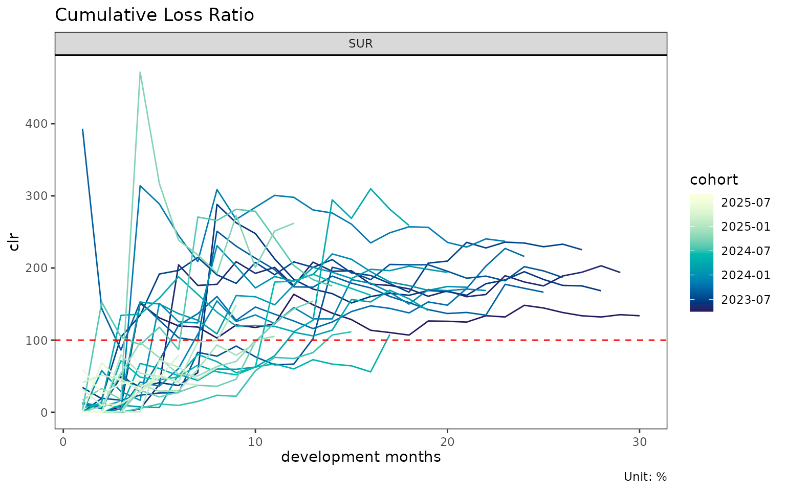
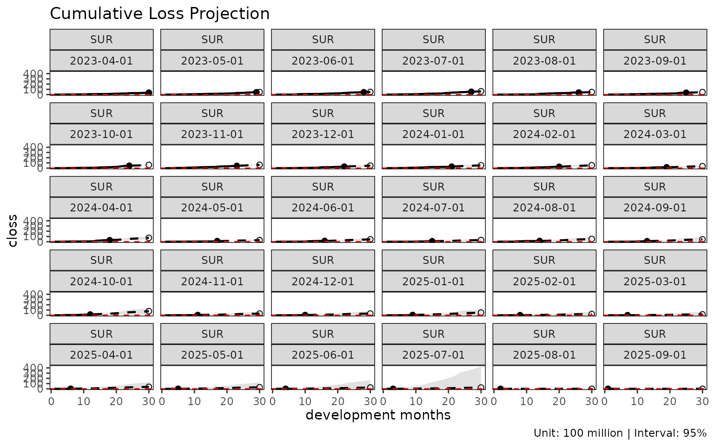

This vignette walks the full lossratio pipeline on the
bundled synthetic experience data, from raw long-format rows to a fitted
loss-ratio projection.
Input shape
lossratio consumes long-format experience data — one row
per (cohort × dev × demographic) cell. The bundled dataset
experience is a 33,381-row table with calendar /
underwriting period columns at multiple granularities, demographic
dimensions (cv_nm, age_band,
gender), and amounts (loss,
rp).
library(lossratio)
data(experience)
str(experience)
#> Classes 'data.table' and 'data.frame': 33480 obs. of 17 variables:
#> $ cy : Date, format: "2023-01-01" "2023-01-01" ...
#> $ cyh : Date, format: "2023-01-01" "2023-01-01" ...
#> $ cyq : Date, format: "2023-04-01" "2023-04-01" ...
#> $ cym : Date, format: "2023-04-01" "2023-04-01" ...
#> $ uy : Date, format: "2023-01-01" "2023-01-01" ...
#> $ uyh : Date, format: "2023-01-01" "2023-01-01" ...
#> $ uyq : Date, format: "2023-04-01" "2023-04-01" ...
#> $ uym : Date, format: "2023-04-01" "2023-04-01" ...
#> $ elap_y : int 1 1 1 1 1 1 1 1 1 1 ...
#> $ elap_h : int 1 1 1 1 1 1 1 1 1 1 ...
#> $ elap_q : int 1 1 1 1 1 1 1 1 1 1 ...
#> $ elap_m : int 1 1 1 1 1 1 1 1 1 1 ...
#> $ cv_nm : chr "SUR" "SUR" "SUR" "SUR" ...
#> $ age_band: Ord.factor w/ 9 levels "30-34"<"35-39"<..: 1 1 2 2 3 3 4 4 5 5 ...
#> $ gender : Factor w/ 2 levels "M","F": 1 2 1 2 1 2 1 2 1 2 ...
#> $ loss : num 0 0 0 0 0 0 0 0 0 0 ...
#> $ rp : num 3555865 258448 255420 464313 92744 ...
#> - attr(*, ".internal.selfref")=<pointer: (nil)>Step 1 — Validate and coerce
exp <- as_experience(experience)
class(exp)
#> [1] "experience" "data.table" "data.frame"as_experience() checks required columns
(cym, uym, loss,
rp), coerces date columns, and tags the class. Use
check_experience(df) for a non-mutating check.
Step 2 — Build the cohort × dev structure
tri <- build_triangle(exp[cv_nm == "SUR"], group_var = cv_nm)
class(tri)
#> [1] "triangle" "data.table" "data.frame"
names(tri)
#> [1] "cv_nm" "n_obs" "cohort" "dev" "loss"
#> [6] "rp" "closs" "crp" "margin" "cmargin"
#> [11] "profit" "cprofit" "lr" "clr" "loss_prop"
#> [16] "rp_prop" "closs_prop" "crp_prop"- aggregates demographic dimensions away (here:
age_band,gender), - adds cumulative columns (
closs,crp), - adds derived metrics (
margin,lr,clr, proportions), - standardises the cohort / development columns to the names
cohortanddev, - preserves original column names as attributes
(
cohort_var,dev_var) for downstream plot labels.
Step 3 — Diagnostics
plot(tri) # cohort trajectories of clr
plot_triangle(tri) # heatmap of clr cells
summary(tri) # group-wise statistics by dev
#> Key: <cv_nm, dev>
#> cv_nm dev n_obs lr_mean lr_median lr_wt clr_mean clr_median
#> <char> <int> <int> <num> <num> <num> <num> <num>
#> 1: SUR 1 30 0.2080530 0.000000000 0.1939673 0.2080530 0.00000000
#> 2: SUR 2 29 0.2455538 0.005389659 0.2372175 0.2202379 0.07780699
#> 3: SUR 3 28 0.5412315 0.149100068 0.5524150 0.3571573 0.17176644
#> 4: SUR 4 27 1.5617397 0.543742527 1.5699270 0.8304897 0.41766876
#> 5: SUR 5 26 1.3257256 0.554421837 1.2462162 0.9114759 0.56431947
#> 6: SUR 6 25 1.0841279 0.364401372 1.0639413 0.9546004 0.62534087
#> 7: SUR 7 24 1.4711422 1.134317987 1.6172051 1.0984422 0.98311641
#> 8: SUR 8 23 2.2396563 0.996762568 2.4695749 1.3964044 1.08696795
#> 9: SUR 9 22 1.4031861 0.824852660 1.4343234 1.4472806 1.26573251
#> 10: SUR 10 21 1.7333809 1.634368507 1.6294610 1.4723949 1.34961049
#> 11: SUR 11 20 1.9663471 1.458094766 1.9482510 1.5649672 1.42466715
#> 12: SUR 12 19 1.6445594 1.513862297 1.6854737 1.6041294 1.73852449
#> 13: SUR 13 18 1.8888322 1.771917063 1.8753259 1.5778061 1.62346695
#> 14: SUR 14 17 2.7101106 1.600630993 2.9504589 1.7536365 1.80562172
#> 15: SUR 15 16 1.3972429 1.163043712 1.6278065 1.7482681 1.81444100
#> 16: SUR 16 15 1.3626847 0.949735140 1.4546782 1.7552695 1.77659237
#> 17: SUR 17 14 1.9781489 1.314777415 1.9060125 1.7781093 1.72479209
#> 18: SUR 18 13 1.1693884 0.932454770 1.2171785 1.7707780 1.66392094
#> 19: SUR 19 12 2.1965368 2.260330218 2.2839805 1.7476903 1.68893025
#> 20: SUR 20 11 1.5572205 1.469457065 1.4796093 1.7494610 1.68582650
#> 21: SUR 21 10 2.0892894 1.483108861 2.0235415 1.7519754 1.71238115
#> 22: SUR 22 9 2.7635619 2.409323706 2.7577694 1.8200468 1.78159642
#> 23: SUR 23 8 3.1877661 3.053144735 3.4726693 1.9556090 1.86412239
#> 24: SUR 24 7 1.9738514 2.197825361 2.1989655 1.9258036 1.94859885
#> 25: SUR 25 6 0.9013157 1.010235567 0.9451548 1.8263456 1.79643323
#> 26: SUR 26 5 1.6444242 0.846026751 1.6342535 1.8460220 1.86913373
#> 27: SUR 27 4 1.5504010 1.331600631 1.4532497 1.8208416 1.84639352
#> 28: SUR 28 3 1.9738903 1.064691530 1.6041476 1.6785125 1.68390907
#> 29: SUR 29 2 1.0848500 1.084849979 1.1297025 1.6450982 1.64509820
#> 30: SUR 30 1 1.1455972 1.145597160 1.1455972 1.3380971 1.33809709
#> cv_nm dev n_obs lr_mean lr_median lr_wt clr_mean clr_median
#> <char> <int> <int> <num> <num> <num> <num> <num>
#> clr_wt
#> <num>
#> 1: 0.1939673
#> 2: 0.2224665
#> 3: 0.3630603
#> 4: 0.8177716
#> 5: 0.9316804
#> 6: 0.9778684
#> 7: 1.1201157
#> 8: 1.4142730
#> 9: 1.4513118
#> 10: 1.4784032
#> 11: 1.5736234
#> 12: 1.6120511
#> 13: 1.5964003
#> 14: 1.7651456
#> 15: 1.7502698
#> 16: 1.7562775
#> 17: 1.7802338
#> 18: 1.7691786
#> 19: 1.7542191
#> 20: 1.7554551
#> 21: 1.7613209
#> 22: 1.8339909
#> 23: 1.9722480
#> 24: 1.9357069
#> 25: 1.8304242
#> 26: 1.8502970
#> 27: 1.8264828
#> 28: 1.6715582
#> 29: 1.6351190
#> 30: 1.3380971
#> clr_wt
#> <num>Step 4 — Development modeling
Two complementary views of cohort development:
# Age-to-age factors
ata <- build_ata(tri, value_var = "closs")
fit_ata(ata)
#> <ata_fit>
#> alpha : 1
#> sigma_method: min_last2
#> recent : all
#> use_maturity: FALSE
#> groups : cv_nm
#> n_groups : 1
#> ata links : 29
# Exposure-driven intensities
ed <- build_ed(tri, loss_var = "closs", exposure_var = "crp")
fit_ed(ed)
#> <ed_fit>
#> method : basic
#> loss_var : closs
#> exposure_var: crp
#> alpha : 1
#> sigma_method: min_last2
#> recent : all
#> groups : cv_nm
#> n_groups : 1
#> links : 29fit_ata() returns selected age-to-age factors per
development link. fit_ed() returns intensity factors
.
Both are inputs to the projection methods below.
Step 5 — Projection
fit_cl() runs a chain ladder projection:

summary(cl)
#> cv_nm cohort latest ultimate reserve proc_se param_se
#> <char> <Date> <num> <num> <num> <num> <num>
#> 1: SUR 2023-04-01 3507505356 3507505356 0 0 0
#> 2: SUR 2023-05-01 4406252675 4692659098 286406424 115260759 133302193
#> 3: SUR 2023-06-01 4509339237 4989741692 480402456 260546297 229777362
#> 4: SUR 2023-07-01 5313443543 6249920460 936476917 323487807 303531340
#> 5: SUR 2023-08-01 3911972952 4790104551 878131600 302841480 238651514
#> 6: SUR 2023-09-01 3526798889 4586214482 1059415593 392548272 254462375
#> 7: SUR 2023-10-01 4570171158 6156953685 1586782527 470323491 346064336
#> 8: SUR 2023-11-01 4307117714 6353810849 2046693136 682297376 413067407
#> 9: SUR 2023-12-01 2804040621 4756961997 1952921376 846641173 371481860
#> 10: SUR 2024-01-01 2802596394 5310789808 2508193413 967471922 433176089
#> 11: SUR 2024-02-01 2579006390 5390468156 2811461766 1040126141 455118832
#> 12: SUR 2024-03-01 1598826418 3605760085 2006933667 860004678 306092171
#> 13: SUR 2024-04-01 2886602142 7343304556 4456702414 1383569396 661959599
#> 14: SUR 2024-05-01 1069844601 2925726831 1855882230 902243763 267911601
#> 15: SUR 2024-06-01 1441825655 4443751247 3001925593 1330587755 446291293
#> 16: SUR 2024-07-01 920185549 3113972263 2193786714 1176679539 322137404
#> 17: SUR 2024-08-01 1367757350 5179388346 3811630995 1733832466 577622326
#> 18: SUR 2024-09-01 940227572 4479020413 3538792841 2210584453 610162835
#> 19: SUR 2024-10-01 1396666726 7711276603 6314609878 2989040405 1072033239
#> 20: SUR 2024-11-01 469264829 3075404317 2606139487 1979891967 440762324
#> 21: SUR 2024-12-01 402765219 3257251807 2854486587 2370955488 516172961
#> 22: SUR 2025-01-01 518265377 5092462598 4574197221 3206591244 851970535
#> 23: SUR 2025-02-01 193154960 2332563087 2139408127 2308254859 407144209
#> 24: SUR 2025-03-01 87626232 1619023322 1531397089 2577171382 351339683
#> 25: SUR 2025-04-01 141379071 3769384328 3628005256 4545247070 919561739
#> 26: SUR 2025-05-01 79474575 2873248566 2793773992 4722987523 809706186
#> 27: SUR 2025-06-01 44351381 2365070816 2320719436 7190998494 1055891775
#> 28: SUR 2025-07-01 12461511 2312527756 2300066245 20431127319 2852680795
#> 29: SUR 2025-08-01 0 0 0 0 0
#> 30: SUR 2025-09-01 0 0 0 0 0
#> cv_nm cohort latest ultimate reserve proc_se param_se
#> <char> <Date> <num> <num> <num> <num> <num>
#> se cv
#> <num> <num>
#> 1: 0 0.00000000
#> 2: 176222919 0.03755289
#> 3: 347393162 0.06962147
#> 4: 443593999 0.07097594
#> 5: 385574257 0.08049391
#> 6: 467808985 0.10200329
#> 7: 583921836 0.09483941
#> 8: 797592874 0.12552984
#> 9: 924553972 0.19435807
#> 10: 1060020492 0.19959752
#> 11: 1135339395 0.21061981
#> 12: 912852926 0.25316519
#> 13: 1533771425 0.20886665
#> 14: 941180340 0.32169112
#> 15: 1403438524 0.31582293
#> 16: 1219978379 0.39177561
#> 17: 1827518145 0.35284439
#> 18: 2293247110 0.51199747
#> 19: 3175471273 0.41179579
#> 20: 2028359836 0.65954250
#> 21: 2426492211 0.74495076
#> 22: 3317842853 0.65152032
#> 23: 2343887135 1.00485477
#> 24: 2601009786 1.60653015
#> 25: 4637333794 1.23026293
#> 26: 4791892659 1.66776126
#> 27: 7268106134 3.07310296
#> 28: 20629317760 8.92067899
#> 29: 0 NA
#> 30: 0 NA
#> se cv
#> <num> <num>fit_lr() runs a loss-ratio projection. The default
method = "sa" (stage-adaptive) uses exposure-driven before
maturity and chain ladder after, switching at the per-group maturity
point detected from the ata factors.

summary(lr)
#> cv_nm cohort latest ultimate reserve exposure_ult clr_latest
#> <char> <Date> <num> <num> <num> <num> <num>
#> 1: SUR 2023-04-01 3507505356 3507505356 0 2621263717 1.3380971
#> 2: SUR 2023-05-01 4406252675 4692659098 286406424 2447179852 1.9373843
#> 3: SUR 2023-06-01 4509339237 4989741692 480402456 3045660786 1.6839091
#> 4: SUR 2023-07-01 5313443543 6249920460 936476917 2859002912 2.2532321
#> 5: SUR 2023-08-01 3911972952 4790104551 878131600 2669412392 1.8691337
#> 6: SUR 2023-09-01 3526798889 4586214482 1059415593 2893769142 1.6648169
#> 7: SUR 2023-10-01 4570171158 6156953685 1586782527 3094707500 2.1604887
#> 8: SUR 2023-11-01 4307117714 6353810849 2046693136 2879458987 2.3699733
#> 9: SUR 2023-12-01 2804040621 4756961997 1952921376 2843155663 1.6876214
#> 10: SUR 2024-01-01 2802596394 5310789808 2508193413 2974323113 1.7332940
#> 11: SUR 2024-02-01 2579006390 5390468156 2811461766 2661467247 1.9393670
#> 12: SUR 2024-03-01 1598826418 3605760085 2006933667 2483209935 1.4110120
#> 13: SUR 2024-04-01 2886602142 7343304556 4456702414 2676093355 2.5884670
#> 14: SUR 2024-05-01 1069844601 2925726831 1855882230 2650182997 1.0781941
#> 15: SUR 2024-06-01 1441825655 4443751247 3001925593 2653104694 1.6227525
#> 16: SUR 2024-07-01 920185549 3113972263 2193786714 2758730497 1.1155218
#> 17: SUR 2024-08-01 1367757350 5184406888 3816649538 2949332103 1.7510206
#> 18: SUR 2024-09-01 940227572 4529063006 3588835434 2628969704 1.5394236
#> 19: SUR 2024-10-01 1396666726 6507558014 5110891288 2600171987 2.6195782
#> 20: SUR 2024-11-01 469264829 3790320997 3321056168 2558267991 1.0529047
#> 21: SUR 2024-12-01 402765219 4334152656 3931387437 2865484237 0.9528421
#> 22: SUR 2025-01-01 518265377 5036348322 4518082945 2811568955 1.4882717
#> 23: SUR 2025-02-01 193154960 4645763088 4452608128 3116396355 0.6170140
#> 24: SUR 2025-03-01 87626232 4434935578 4347309346 2859035712 0.3804721
#> 25: SUR 2025-04-01 141379071 4826181874 4684802803 2820900137 0.7901498
#> 26: SUR 2025-05-01 79474575 5330755348 5251280773 3170694512 0.5208363
#> 27: SUR 2025-06-01 44351381 4669095782 4624744401 2746665433 0.4418904
#> 28: SUR 2025-07-01 12461511 6405537028 6393075517 3705335918 0.1463368
#> 29: SUR 2025-08-01 0 5151619396 5151619396 2969197221 0.0000000
#> 30: SUR 2025-09-01 0 5216378154 5216378154 2995415278 0.0000000
#> cv_nm cohort latest ultimate reserve exposure_ult clr_latest
#> <char> <Date> <num> <num> <num> <num> <num>
#> clr_ult maturity_from proc_se param_se se cv
#> <num> <num> <num> <num> <num> <num>
#> 1: 1.338097 15 0 0 0 0.00000000
#> 2: 1.917578 15 115260759 133302193 176222919 0.03755289
#> 3: 1.638312 15 260546297 229777362 347393162 0.06962147
#> 4: 2.186049 15 323487807 303531340 443593999 0.07097594
#> 5: 1.794442 15 302841480 238651514 385574257 0.08049391
#> 6: 1.584858 15 392548272 254462375 467808985 0.10200329
#> 7: 1.989511 15 470323491 346064336 583921836 0.09483941
#> 8: 2.206599 15 682297376 413067407 797592874 0.12552984
#> 9: 1.673128 15 846641173 371481860 924553972 0.19435807
#> 10: 1.785546 15 967471922 433176089 1060020492 0.19959752
#> 11: 2.025375 15 1040126141 455118832 1135339395 0.21061981
#> 12: 1.452056 15 860004678 306092171 912852926 0.25316519
#> 13: 2.744039 15 1383569396 661959599 1533771425 0.20886665
#> 14: 1.103972 15 902243763 267911601 941180340 0.32169112
#> 15: 1.674925 15 1330587755 446291293 1403438524 0.31582293
#> 16: 1.128770 15 1176679539 322137404 1219978379 0.39177561
#> 17: 1.757824 15 1653413517 562374194 1746436656 0.33686335
#> 18: 1.722752 15 1920875276 560752113 2001050913 0.44182448
#> 19: 2.502741 15 2158786246 742807671 2283007072 0.35082393
#> 20: 1.481597 15 1896073998 507474792 1962811063 0.51784824
#> 21: 1.512538 15 2081774707 587531425 2163094798 0.49908136
#> 22: 1.791295 15 2161224847 643156031 2254893017 0.44772380
#> 23: 1.490748 15 2219680565 643605267 2311105698 0.49746525
#> 24: 1.551200 15 2238134503 619051552 2322169433 0.52360838
#> 25: 1.710866 15 2299686885 650849914 2390013678 0.49521832
#> 26: 1.681258 15 2441571165 725982384 2547218125 0.47783437
#> 27: 1.699914 15 2282292178 633588616 2368605523 0.50729427
#> 28: 1.728733 15 2692258007 868125300 2828762046 0.44161200
#> 29: 1.735021 15 2413061918 697300804 2511791439 0.48757318
#> 30: 1.741454 15 2425838047 705030372 2526214175 0.48428509
#> clr_ult maturity_from proc_se param_se se cv
#> <num> <num> <num> <num> <num> <num>
#> se_clr cv_clr ci_lower ci_upper
#> <num> <num> <num> <num>
#> 1: 0.00000000 0.00000000 1.338097092 1.338097
#> 2: 0.07201061 0.03755289 1.776440142 2.058717
#> 3: 0.11406167 0.06962147 1.414754928 1.861868
#> 4: 0.15515689 0.07097594 1.881947086 2.490151
#> 5: 0.14444162 0.08049391 1.511341188 2.077542
#> 6: 0.16166078 0.10200329 1.268009140 1.901708
#> 7: 0.18868402 0.09483941 1.619696826 2.359325
#> 8: 0.27699400 0.12552984 1.663700564 2.749497
#> 9: 0.32518584 0.19435807 1.035774983 2.310480
#> 10: 0.35639050 0.19959752 1.087033149 2.484058
#> 11: 0.42658402 0.21061981 1.189285285 2.861464
#> 12: 0.36761005 0.25316519 0.731553624 2.172559
#> 13: 0.57313824 0.20886665 1.620708708 3.867369
#> 14: 0.35513787 0.32169112 0.407914194 1.800029
#> 15: 0.52897970 0.31582293 0.638143790 2.711706
#> 16: 0.44222456 0.39177561 0.262025805 1.995514
#> 17: 0.59214649 0.33686335 0.597238249 2.918410
#> 18: 0.76115404 0.44182448 0.230917566 3.214587
#> 19: 0.87802156 0.35082393 0.781850734 4.223632
#> 20: 0.76724216 0.51784824 0.000000000 2.985364
#> 21: 0.75487932 0.49908136 0.033001318 2.992074
#> 22: 0.80200523 0.44772380 0.219393239 3.363196
#> 23: 0.74159556 0.49746525 0.037247879 2.944249
#> 24: 0.81222121 0.52360838 0.000000000 3.143124
#> 25: 0.84725214 0.49521832 0.050282228 3.371450
#> 26: 0.80336283 0.47783437 0.106695729 3.255820
#> 27: 0.86235677 0.50729427 0.009726071 3.390102
#> 28: 0.76342931 0.44161200 0.232439195 3.225027
#> 29: 0.84594968 0.48757318 0.076990049 3.393052
#> 30: 0.84336025 0.48428509 0.088498365 3.394410
#> se_clr cv_clr ci_lower ci_upper
#> <num> <num> <num> <num>Step 6 — Structural change diagnostics
detect_cohort_regime() checks whether recent cohorts
behave differently from earlier ones. Useful as a preprocessing step
before loss-ratio fitting on a homogeneous subset:
sub <- build_triangle(exp[cv_nm == "SUR"], group_var = cv_nm)
detect_cohort_regime(sub, K = 12, method = "ecp")
#> <cohort_regime>
#> method : ecp
#> value_var : clr
#> window (K) : elap_m 1, ..., 12
#> cohorts : 19 analysed (11 dropped)
#> regimes : 1
#> breakpoints : (none)
#> PC1 / PC2 : 58.2% / 16.5%See vignette("regime-detection") for the dedicated
walkthrough.
Where to next
-
vignette("aggregation-frameworks")— when to usebuild_trianglevsbuild_calendarvsbuild_total. -
vignette("loss-ratio-methods")— choosing among"sa"/"ed"/"cl"infit_lr(). -
vignette("chain-ladder")—fit_cl()deep dive (Mack variance, tail factor). -
vignette("triangle-diagnostics")—summary_ata(),find_ata_maturity(), and triangle-style visualisations. -
vignette("regime-detection")—detect_cohort_regime()for structural-change diagnosis across cohorts. -
vignette("backtest")— calendar-diagonal hold-out validation withfit_clorfit_lr.